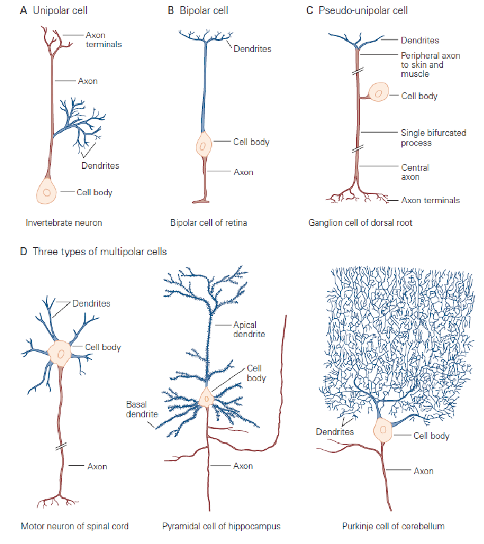
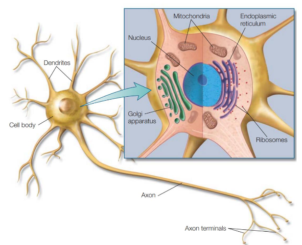
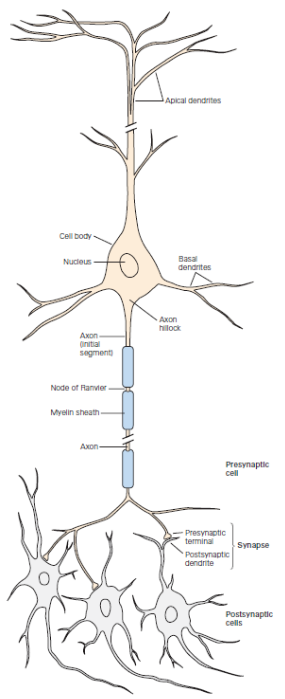
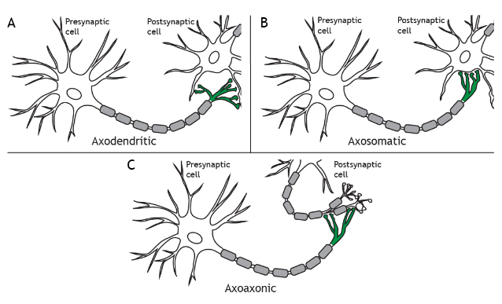

Neurons
Neurons are the cells in the brain responsible for the information share and manipulation. Here are the different types of neurons: 
There are 100 billion neurons in our brain that are of 100 different types. Each neuron receive and gives rise to thousands of connections. Neurons vary in their form, location, and inter-connectivity within the nervous system, and these variations are closely related to their functions.
Structure

Components found in almost all eukaryotic cells:
- Membrane: separate the cell from the outside
- Cytoplasm: intracellular fluid that is made up of a combination of ions, predominantly ions of potassium, sodium, chloride, and calcium, as well as molecules such as proteins.
- The extracellular fluid: a bath where the neurons sit, made up of a mixture of the same types of ions found in the intracellular fluid.
- Cell body or soma: metabolic center of the cell. It contains the nucleus, which contains the genes of the cell, and the endoplasmic reticulum, where proteins are synthesized.

A neuron is also composed of:
- Dendrites: the string that connect with other neurons and allow receiving information and signals.
- Axon: Is the output of the cell. It is covered by oligodendrocytes .
- Synapse: also string looking, they enable the output to be shared with other neurons.
More on synapses
Depending on who is receiving or giving the information, a neuron can be Post synaptic (receiving) or Presynaptic (giving). The narrow space separating the presynaptic and postsynaptic cell is called Synaptic cleft. Type of synapses:
- Axosomatic: synapses that are made onto the soma or cell body of a neuron.
- Axodendritic: synapses that one neuron makes onto the dendrite of another neuron. The most common type.
- Axoaxonic: synapses made by one neuron onto the synapse of another neuron. Axoaxonic synapses mediate presynaptic inhibition and presynaptic facilitation.

Neurons classification
There are 3 main types of neurons, separated by their functional category:
- Sensory: carry information from the body pheripherals to the nervous system.
- Motor: carry commands from the brain to the body
- Interneurons: mediate the impulses between sensory and motor neurons
Here's how Information sharing between neurons works.
Divergence
A neuron can activate many target cells. This helps with share the influence
Convergence
A neuron need to be activated by a number of different other neurons.
Inhibitory neurons
Some neurons can have a inhibitory function that reduces the likelihood of firing. These neurons can be:
- Feed-forward: excitatory neurons' synapse onto inhibitory interneurons, inhibiting other downstream neurons. They enhance the effect of the active pathway by suppressing the activity of pathways mediating opposing actions
- Feed-back: excitatory neurons' synapse onto inhibitory interneurons, which project back to the same neurons and inhibit them. They dampen activity within the stimulated pathway and prevent it from exceeding a certain critical level